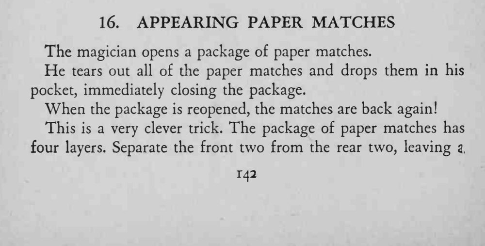
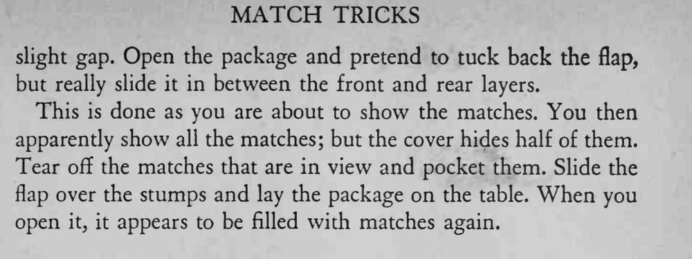

魔术师把一包纸火柴全部撕下来丢进口袋，随手合上纸包；再打开时，火柴竟然又满满一包。
翻盖要顺着层缝滑进去，不能让纸包看上去被撑开。


The magician opens a package of paper matches. He tears out all of the paper matches and drops them in his pocket, immediately closing the package. When the package is reopened, the matches are back again! This is a very clever trick. The package of paper matches has four layers. Separate the front two from the rear two, leaving slight gap. Open the package and pretend to tuck back the flap, but really slide it in between the front and rear layers. This is done as you are about to show the matches. You then apparently show all the matches; but the cover hides half of them. Tear off the matches that are in view and pocket them. Slide the flap over the stumps and lay the package on the table. When you open it, it appears to be filled with matches again.